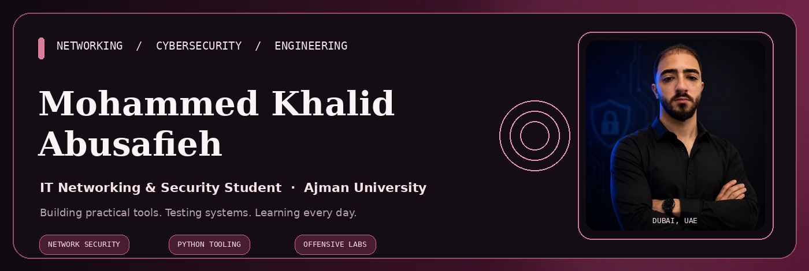
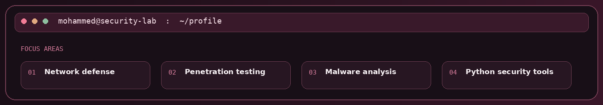
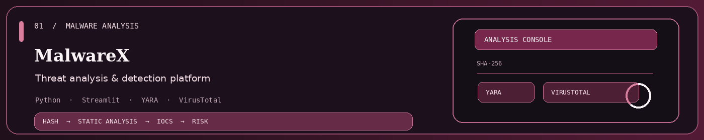
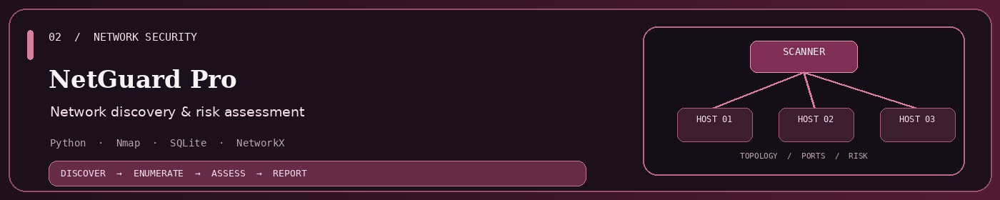
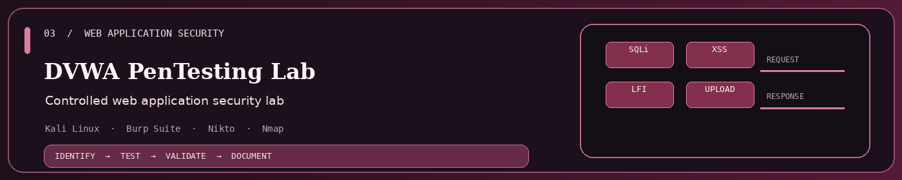
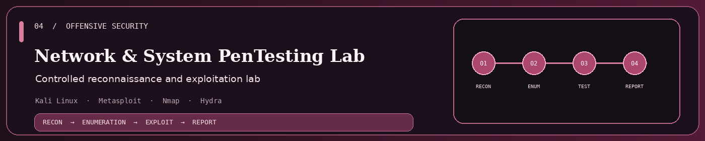
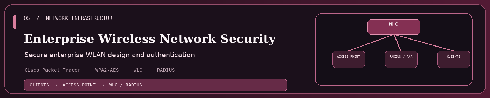
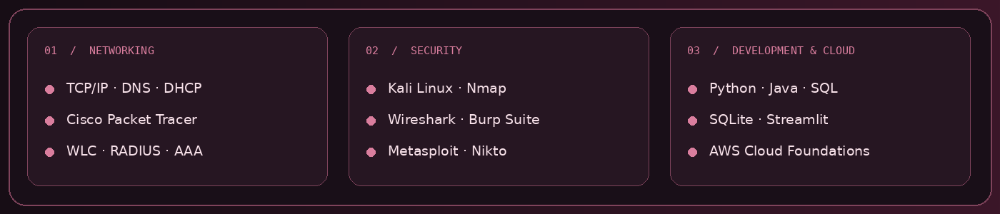
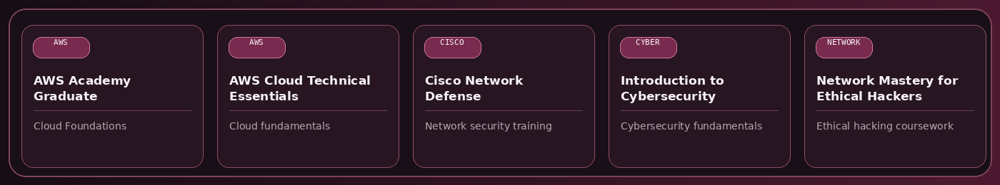
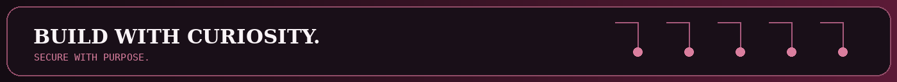

ABOUT

Information Technology student specializing in Networking & Security at Ajman University. Interested in network security, infrastructure, vulnerability assessment, and security automation.
Education: BSc Information Technology — expected February 2027
Experience: IT Support Intern — Al Qaro Roads Contracting L.L.C. — June to September 2026
SELECTED PROJECTS





TECHNICAL TOOLKIT

TRAINING & COURSEWORK

Training and coursework completions are not represented as professional certifications unless the credential explicitly says so.
GITHUB CONTRIBUTIONS
The contribution snake is generated from real GitHub activity by GitHub Actions.
